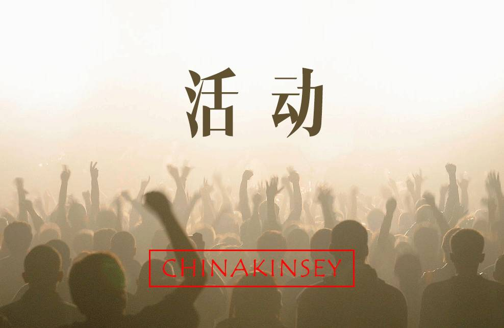
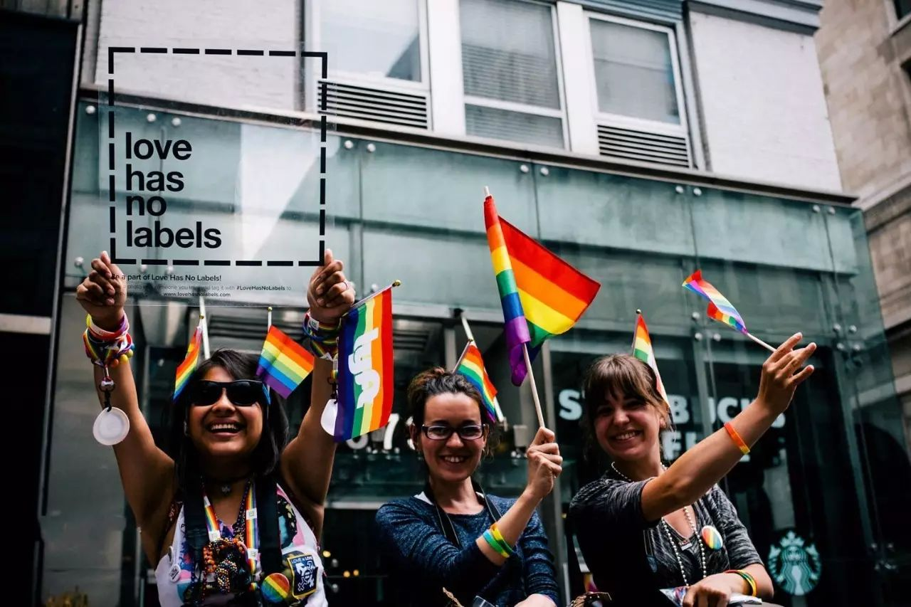
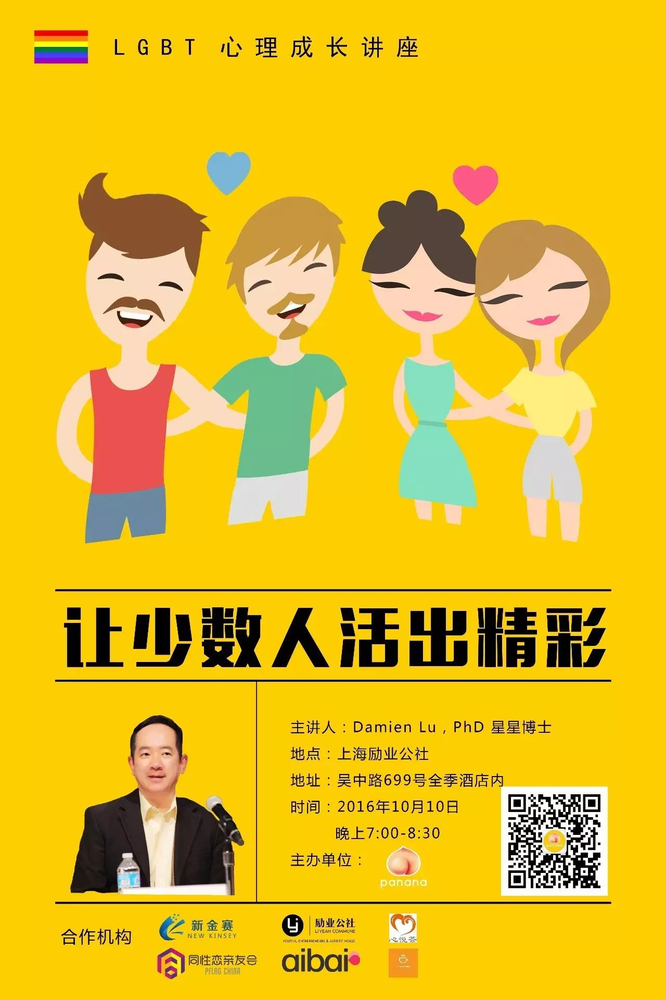
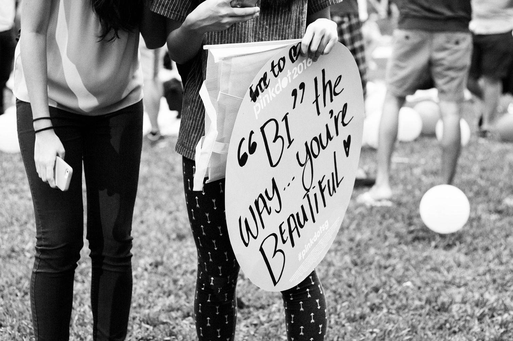
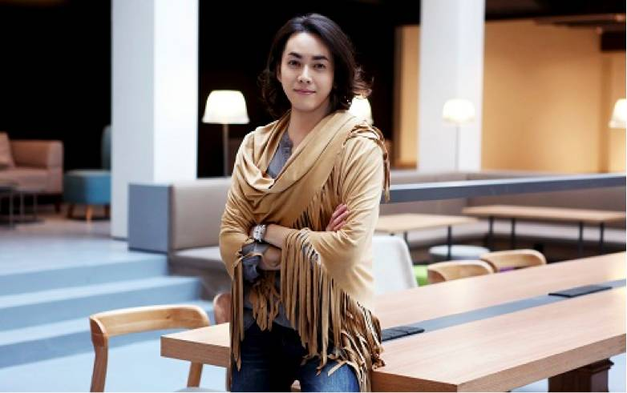
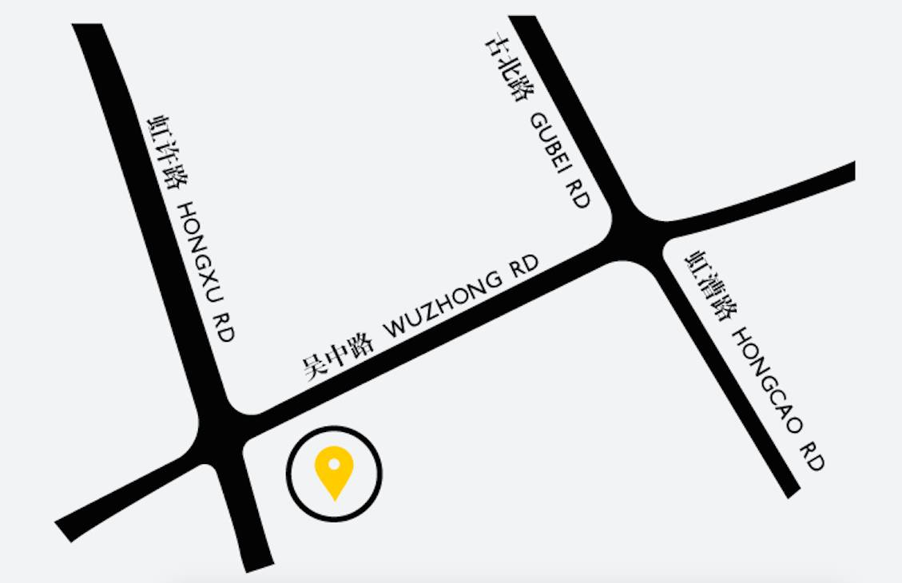
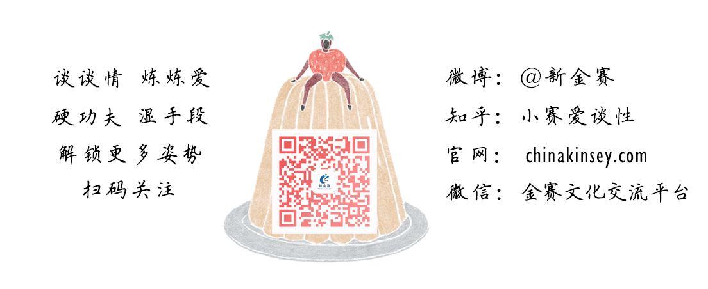

Panana 葩娜娜
提供全面科学的性知识，分享真实个性的性观点，汇聚年轻人最多元的声音
一个没了b的香蕉，一个黄透的桃子。
长按识别二维码更多精彩
作为LGBT孩子的父母，你曾经不理解孩子为何喜欢同性，你希望孩子能改变，你害怕孩子遭受到他人的歧视，你还担忧孩子的晚年无人照顾，爱子心切的你要怎么办？
作为经常接触到LGBT人或事的咨询师，你觉得自己对这类人群的了解或许还不够多，你在为这类人群提供服务时，应遵守怎样的原则，使用什么样的方法，给予怎样的帮助？

作为中学大学里的教育工作者，你可能发现自己的学生经常谈论LGBT话题，甚至流传着某位同学就是同性恋的说法，又或许已有学生向你出柜，这些问题都令你手足无措？
身为LGBT中一员，你可能在很多场合试图掩饰自己，你害怕被人视为异类，你苦恼于被逼婚，面对社会大众歧视，你到底应该怎么办？又要如何接纳自己？
无论你是谁，只要你想对LGBT人群多一些了解，并帮他们活得更精彩，本场讲座就一定能让你收获满满。本次讲座，我们有幸邀请到了为世界各地使用中文的同志提供过无数信息和咨询Damien老师，他将针对以上问题为各位出谋划策。

讲座主题：
LGBT人群心理成长——如何更好地自我接纳、如何面对来自环境的歧视
有些年轻人说自己曾经有非常宏大的理想，但发现自己是同性倾向以后，就觉得这一切就都不可能了。这显然将严重地给他本人的生活、学习、事业等等带来负面影响。
一个糟糕的自我认同，有可能给这个人带来各种各样的心理问题。用什么态度去面对歧视、面对社会压力，很大的一部分是取决于你的自我认同达到什么程度。

主讲人介绍：
Damien Lu，PhD 星星博士
美国人性光辉性教育与性治疗项目教授；UCLA博士
曾任教于纽约州立大学、加州大学洛杉矶分校
现担任洛杉矶精神健康署顾问
中国同性恋信息交流中心主创人兼董事长
Damien 从80年代开始介入亚裔群体LGBT工作，在1999年，他加入了新成立的爱白网站，为世界各地使用中文的同志提供信息和咨询。自2004年以来，他曾在包括北京大学、复旦大学在内的众多中国大学、政府机构和非政府组织讲课，主要传播关于性倾向的基本知识、反歧视、情感关系与艾滋病预防的知识。
主持人：
Mr Shocann陈修侃
励业公社 联合办公空间创始人
专栏作家，复旦大学新闻学院博士
陕西师范大学研究生导师，台湾商业发展研究院顾问

讲座概述：
语言：中文
地点：上海励业公社
地址：上海市吴中路699号励业公社（全季酒店院落内）
时间：2016年10月10日，晚上7:00-8:30
人数：150-200人

参与方式：
免费报名（前30名报名者可获赠精美小礼品一份）
报名请点击 阅读原文
扫一扫 立即报名
主办方：
Panana 葩娜娜
提供全面科学的性知识，分享真实个性的性观点，汇聚年轻人最多元的声音
一个没了b的香蕉，一个黄透的桃子。
长按识别二维码更多精彩
请把这个消息，转发给你身边的需要的、感兴趣的朋友吧~

点击阅读原文 马上报名！